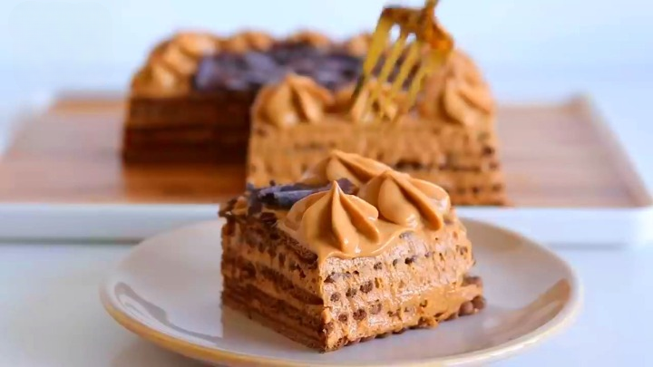

Chocotorta is a classic Argentine no-bake dessert made by layering chocolate cookies with a creamy mixture of dulce de leche and cream cheese.
Perfect for birthdays, family gatherings, or any special occasion, this sweet treat combines crunchy cookies with a soft, rich filling that melts in your mouth.
Easy to prepare and incredibly delicious, it’s a favorite for dessert lovers of all ages!
Ingredients
2 packs of chocolate cookies
400 g (14 oz) dulce de leche
400 g (14 oz) cream cheese
Coffee or milk to dip the cookies
Cocoa powder (optional)
Steps
Mix dulce de leche with cream cheese until smooth.
Dip cookies in coffee or milk and layer in a dish.
Spread a layer of cream mixture on top of the cookies.
Repeat layers until all ingredients are used.
Sprinkle cocoa powder and refrigerate for at least 3 hours.